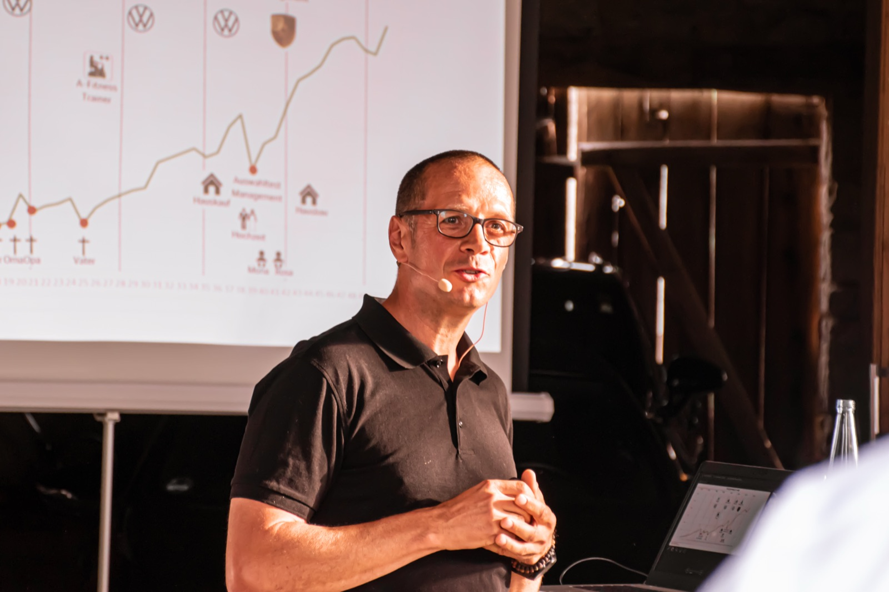
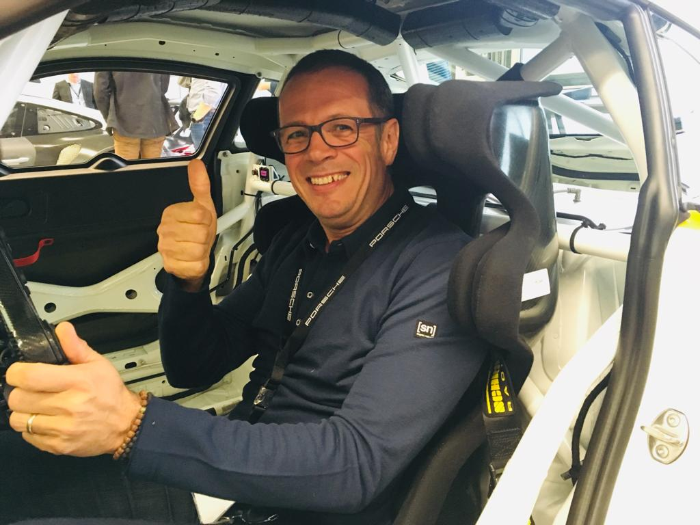

Meine Geschichte
25 Jahre Industrie. Dann ein Neustart.



Mein Weg, erzählt auf der Bühne
Wolfsburg · Volkswagen
Führung habe ich dort gelernt, wo sie zählt: im Tagesgeschäft.
Als Diplom-Ingenieur bin ich bei Volkswagen eingestiegen und habe technische Informationssysteme, die Produktpflege und das Produktmanagement für Modellpflegen geleitet. Viele Jahre nah am Vorstand, mitten in Entscheidungen, die tausende Menschen betreffen.
Leipzig · Anlaufmanagement
25 Serienanläufe. Jeder einzelne eine Übergabe unter Zeitdruck.
Als Leiter Anlaufmanagement im Werk Leipzig war ich verantwortlich, wenn ein neues Fahrzeug in Serie ging. Ich habe es aus der Entwicklung übernommen, in die Produktion gebracht und an den Kunden übergeben. Der Termin steht, und Technik, Abteilungen und Menschen müssen gleichzeitig mitziehen. Dort habe ich gelernt: Übergaben scheitern selten an der Technik.
Einer der Anläufe, die mich am meisten geprägt haben: der Macan. Ein Wandel für das ganze Werk Leipzig.
Ende 2021
Dann habe ich selbst übergeben.
Nach 25 Jahren im Konzern bin ich gegangen, habe das Haus in Sachsen verkauft und bin ins Allgäu gezogen. Viele haben gefragt: Was machst du jetzt? Meine Antwort war ein Neustart. Auf Englisch: Reboot. Ich weiß also, wie es sich anfühlt, etwas Großes loszulassen.
Heute · Allgäu
Ich begleite Familienunternehmen in die nächste Generation.
Vor allem im produzierenden Gewerbe und im Maschinenbau, wo ich die Sprache spreche und den Shopfloor genauso kenne wie den Vorstand. Mit der Erfahrung aus der Industrie, fundierter Persönlichkeitsentwicklung und dem Blick auf die Menschen, die eine Übergabe tragen.